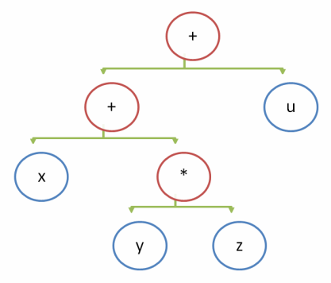

Машинный код (байткод) всегда предназначен для исполнения каким-либо процессором, физическим либо виртуальным. Процессоры (машины) могут быть стековыми либо регистровыми:
В стековом байткоде виртуальной машины инструкции короче, а сам подход позволяет написать компилятор значительно легче. Регистровый позволяет проводить операции с памятью намного эффективнее, особенно с учётом современных процессоров, которые практически всегда являются регистровыми с программным стеком в оперативной памяти (более медленной, чем регистры).
В большинстве языков символ бинарного оператора ставится между его операндами, например: x + y * z + u. Порядок выполнения операций определяется неявным приоритетом операторов и явно расставленными скобками. Расставим все скобки явно: ((x + (y * z)) + u) (мы пренебрегли правилом ассоциативности, по которому (a + b) + c = a + (b + c)).
После явной расстановки скобок можно нарисовать эквивалентное дерево, при обходе которого слева направо вычисления будут выполнены корректно.

В BNF нотации простейшая грамматика выражений выглядит так:
expression ::= add_sub_expr
add_sub_expr ::= mul_div_expr '+' add_sub_expr
| mul_div_expr '-' add_sub_expr
| mul_div_expr
mul_div_expr ::= atom_expr '*' mul_div_expr
| atom_expr '/' mul_div_expr
| atom_expr '%' mul_div_expr
| atom_expr
atom_expr ::= [0-9]+
Если у вас есть построенное дерево выражения, вы можете выполнить трансляцию с помощью обхода дерева слева направо в глубину:
push x # Занести на стек x
push y # Занести на стек y
push z # Занести на стек z
multiply # Снять 2 последних значения со стека и перемножить, результат положить в вершину
add # Снять 2 последних значения со стека и сложить, результат положить в вершину
push u # Занести на стек u
add # Снять 2 последних значения со стека и сложить, результат положить в вершину
Если теперь выполнить инструкции, то на стеке останется одно число — результат арифметической операции
Мы покажем способ на примере ассемблера виртуальной регистровой машины LLVM-IR, в котором можно использовать сколько угодно регистров — для этого нужно просто связывать каждое значение с новым имененем, а в остальном использовать те же самые принципы, что и для стековой (более того, в реализации кодогенератора вам наверняка пригодится структура данных “стек” либо рекурсия):
# Исходник на компилируемом языке
function sqr(x Number) Number
return x * x
end
# Результат в виртуальном ассемблере LLVM-IR
define double @sqr(double %x) {
entry:
%x1 = alloca double # выделяем место для копирования параметра
store double %x, double* %x1 # копируем параметр в переменную
%x2 = load double, double* %x1 # вместо push x
%x3 = load double, double* %x1 # вместо push x
%multmp = fmul double %x2, %x3 # вместо mul
ret double %multmp # возвращаем результат
}
Если число регистров в процессоре ограничено, то придётся распределять свободные регистры по выражениям (хотя проще воспользоваться стековым методом). Хороший алгоритм распределения регистров выходит за рамки этой статьи, но в грубом виде он мог бы выглядеть так: у вас есть набор реальных регистров, имена которых служат ключом в ассоциативном массиве (например, в std::unordered_map), а значение — это указатель на объект Value, временно занимающий регистр (например, shared_ptr<Value>). Этот ассоциативный массив используется для учёта занятых регистров. Если регистры кончились, вы можете выдавить несколько значений на стек (добавив в промежуточный код соответствующие команды копирования), а освободившиеся регистры использовать.